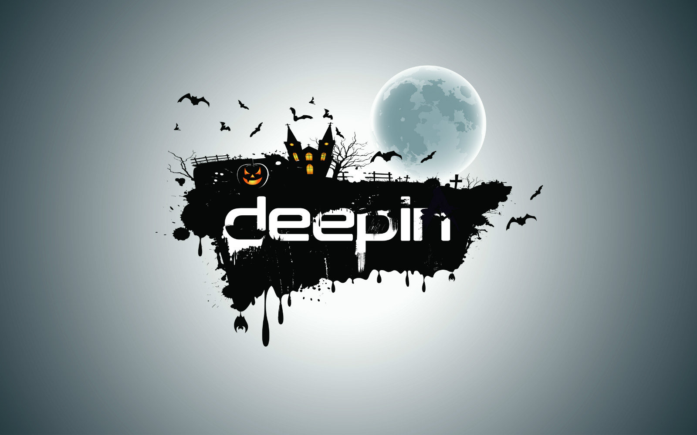
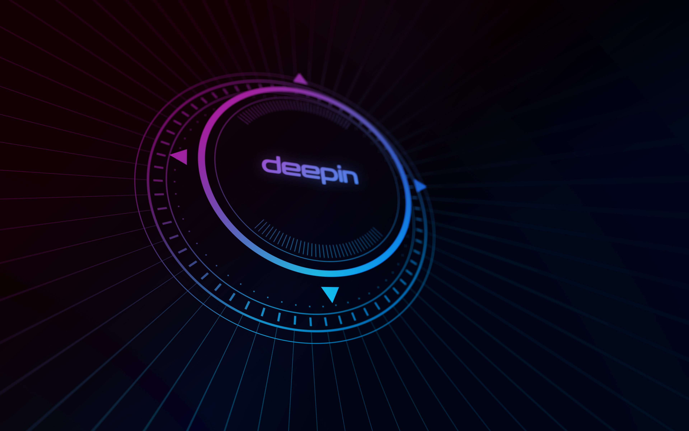

制作本站目的
因为现在 deepin/UOS 的壁纸非常的散，散落在论坛的各个地方，然后偶然刷到一个帖子，便有了这个想法。
目前我的技术和时间有限，是不会做的很好看的，可能会有疏漏和错误
部分图片已经下载到服务器（github），点下面方式访问：
github 仓库访问
背景图片（2013~2021）
- 2021-08-08：[壁纸] deepin 15.11 & 20.2内置壁纸分享 （pzm9012），https://bbs.deepin.org/zh/post/224356
- 2021-08-06：[壁纸] deepin壁纸分享，不可说 （道雪仙尘一剑灯），https://bbs.deepin.org/zh/post/224257
- 2021-07-15：一个果里果气的桌面——CuteFish Desktop（PossibleVing），https://bbs.deepin.org/zh/post/223226
- 2021-07-15：elementary OS 壁纸分享（PossibleVing），https://bbs.deepin.org/zh/post/223215
- 2021-07-13：两张失散已久的壁纸（PossibleVing），https://bbs.deepin.org/zh/post/223085
- 2021-07-08：半个下午捏的深度壁纸（pi369），https://bbs.deepin.org/zh/post/222756
- 2021-06-29：[壁纸] 云南那只独象后来去了这~~~ （爱袁东涛），https://bbs.chinauos.com/zh/post/7635
- 2021-04-28：Zorin OS 壁纸分享（PossibleVing），https://bbs.deepin.org/zh/post/219669
- 2021-04-23：15.11 壁纸分享（PossibleVing），https://bbs.deepin.org/zh/post/219434
- 2021-03-27：[壁纸] 漂亮的壁纸我来分享（wxbbilzz），https://bbs.chinauos.com/zh/post/6523
- 2021-03-04：从微博搬过来的两张壁纸（神经蛙），https://bbs.deepin.org/zh/post/215923
- 2021-03-04：分享一波我收集的壁纸（ltree），https://bbs.deepin.org/zh/post/215709
- 2021-03-02：分享六张壁纸3840*2160（sanduizhen），https://bbs.deepin.org/zh/post/215702
- 2021-01-20：[壁纸] 高清壁纸（moling），https://bbs.chinauos.com/zh/post/5435
- 2021-01-20：个人收藏的壁纸（moling），https://bbs.deepin.org/zh/post/210765
- 2020-12-31：【老传统】新年新气象，一组精美deepin壁纸分享（deepin-mq），https://bbs.deepin.org/zh/post/209087
- 2020-12-2：庆祝嫦娥落月，发壁纸一张（观摩），https://bbs.deepin.org/zh/post/207165
- 2020-11-14：你们要的壁纸（cryzz），https://bbs.deepin.org/zh/post/205749
- 2020-10-20：分享两张壁纸 提取自mac os catalina（heer2019），https://bbs.deepin.org/zh/post/204053
- 2020-08-18：b站网红up主jingle的同款壁纸分享（Ziggy），https://bbs.deepin.org/zh/post/199963
- 2020-08-01：发一张uos的桌面吧！（海鸥），https://bbs.deepin.org/zh/post/198132
- 2020-07-29：【壁纸分享】用官方的壁纸改了一个浅色版本的（吉王义昊），https://bbs.deepin.org/zh/post/197846
- 2020-05-24：【壁纸分享】从15.4扒下来的壁纸（天俾万国），https://bbs.deepin.org/zh/post/194988
- 2019-12-24：「官方壁纸分享」新的一期官方壁纸来啦～（aida），https://bbs.deepin.org/post/187261
- 2019-09-29：CentOS8提取壁纸分享（alwan），https://bbs.deepin.org/zh/post/183265
- 2019-04-29：15.10宣传片中的壁纸分享（aida），https://bbs.deepin.org/post/177329
- 2019-02-21：【2019.02】壁纸分享（aida），https://bbs.deepin.org/zh/post/174933
- 2019-02-11：mac壁纸分享（leixiaozeng），https://bbs.deepin.org/zh/post/174638
- 2018-11-21：求这一张精美的壁纸（gugudu），https://bbs.deepin.org/zh/post/171282
- 2018-09-13：【2018.9】官方桌面壁纸分享（aida），https://bbs.deepin.org/zh/post/168826
- 2018-07-11：官方壁纸分享（allah0805），https://bbs.deepin.org/zh/post/166175
- 2018-06-17：Deepin 壁纸分享（ccdalao），https://bbs.deepin.org/zh/post/158411
- 2018-06-13：互换壁纸来呀（dsy12138），https://bbs.deepin.org/zh/post/158102
- 2018-06-09：分享几张自己收藏的图片（anYun），https://bbs.deepin.org/zh/post/157892
- 2018-05-25：分享自己用 inkscape 做的壁紙（wunian），https://bbs.deepin.org/zh/post/157014
- 2018-02-08：网站配图壁纸终于搜到了，进来看一看*-*（深度操作系统15...（deepinf），https://bbs.deepin.org/zh/post/153051
- 2018-01-23：【2018.01】官方桌面壁纸分享（aida），https://bbs.deepin.org/post/152266
- 2017-12-16：桌面壁纸分享（MMDMM），https://bbs.deepin.org/zh/post/150284
- 2017-12-12：【2017.12】官方桌面壁纸分享（melodyzou），https://bbs.deepin.org/zh/post/150066
- 2017-12-05：壁纸分享（daloyanf），https://bbs.deepin.org/zh/post/149642
- 2017-10-16：【2017.10】官方桌面壁纸分享（jingle），https://bbs.deepin.org/zh/post/146781
- 2017-09-20：【2017.9】官方桌面壁纸分享（jingle），https://bbs.deepin.org/zh/post/145776
- 2017-08-22：【2017.8】官方桌面壁纸分享（jingle），https://bbs.deepin.org/zh/post/144489
- 2017-07-08：壁纸分享（wxp），https://bbs.deepin.org/zh/post/142192
- 2017-07-03：【2017.7】官方桌面壁纸分享（jingle），https://bbs.deepin.org/zh/post/141945
- 2017-06-06：【2017.6】官方桌面壁纸分享（jingle），https://bbs.deepin.org/post/140616
- 2017-06-04：【深度扁平壁纸DIY】Deepin Material Design Wallpapers（atony），https://bbs.deepin.org/zh/post/140518
- 2017-05-16：【更新深海少女！】Deepin专属初音未来壁纸（atony），https://bbs.deepin.org/zh/post/139557
- 2017-03-15：分享一张常用命令背景图，有PSD文件（deepin天下第一），https://bbs.deepin.org/zh/post/136053
- 2017-03-03：【精美壁纸分享】非常好看我的最爱（xiaoxie），https://bbs.deepin.org/zh/post/135473
- 2016-11-15：提取的window精美壁纸（lyz1834），https://bbs.deepin.org/zh/post/132138
- 2016-10-20：自制深度壁纸20张（young999888）,https://bbs.deepin.org/zh/post/44728
- 2016-09-10：2张壁纸送上,不用谢我（yutent），https://bbs.deepin.org/zh/post/43207
- 2016-08-08：【deepin壁纸】为中国奥运健儿加油！！！（jingle），https://bbs.deepin.org/zh/post/42230
- 2016-08-06：分享两张壁纸（zqpetlee），https://bbs.deepin.org/zh/post/42173
- 2016-07-31：壁纸分享（laoguang），https://bbs.deepin.org/zh/post/41936
- 2016-07-29：再来一张壁纸，有点瑕疵（zqpetlee），https://bbs.deepin.org/zh/post/41852
- 2016-07-29：分享一张壁纸（zqpetlee），https://bbs.deepin.org/zh/post/41876
- 2016-07-22：我自己乱做的壁纸。。。（sohworrd），https://bbs.deepin.org/zh/post/41649
- 2016-07-20：分享一张壁纸（见附件）（zqpetlee），https://bbs.deepin.org/zh/post/41580
- 2016-07-04：自制扁平富士山壁纸，喜欢的收走（msn296），https://bbs.deepin.org/zh/post/41147
- 2016-05-01：一组KDE桌面壁纸（nalan），https://bbs.deepin.org/zh/post/39200
- 2015-11-30：ubuntu 16.04壁纸（675875532），https://bbs.deepin.org/zh/post/33616
- 2015-11-28：整理了一波ACG壁纸~（sakura_same），https://bbs.deepin.org/zh/post/33508
- 2015-11-15：分享一个壁纸 来自爱壁纸（isunny），https://bbs.deepin.org/zh/post/33213
- 2015-08-03：分享一张星空给大家当做桌面（alkdbai），https://bbs.deepin.org/zh/post/31752
- 2014-06-03：DEEPIN 2014壁纸大赛评选结果，https://www.deepin.org/zh/2014/06/03/results-of-deepin-2014-wallpaper-contest/
- 2013-09-20：发个苹果mac壁纸合集。。。喜欢的去下载（MephistoCK），https://bbs.deepin.org/zh/post/15359
- 2013-08-26：Fedora 19 壁纸分享（electricface），https://bbs.deepin.org/zh/post/15115
- 2013-08-26：18 New Wallpapers Chosen for Ubuntu 13.10 (Updated)（cxbii），https://bbs.deepin.org/zh/post/15117
其中的一部分照片




